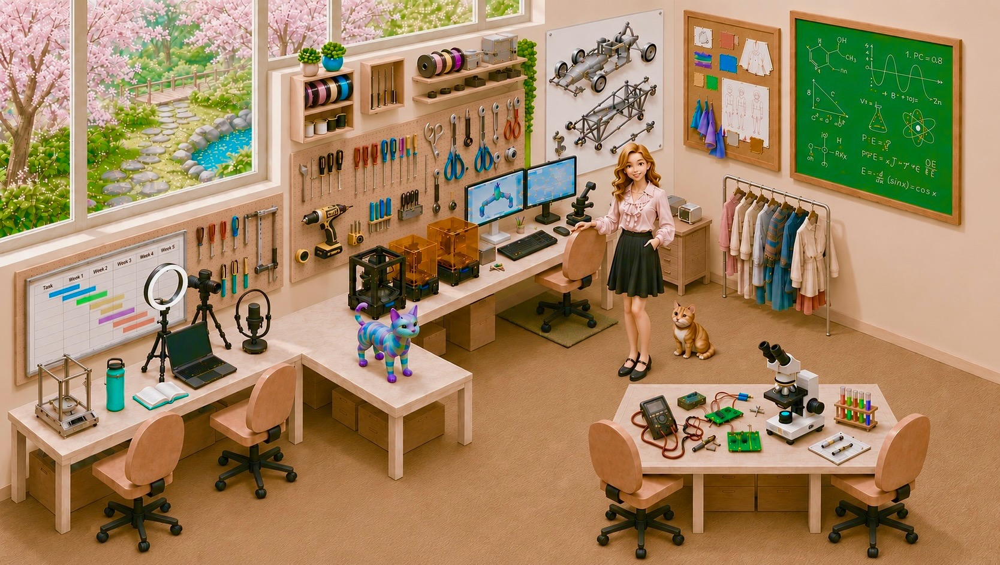
Ashley
Hi, I'm Ashley
I'm a biomedical engineering MS graduate who builds across the full range of engineering environments. Whether I'm in the shop, at the bench, or behind the screen, I'm driven by a passion for creating thoughtfully engineered tools that bring us closer to the next generation of medical devices.
Research · Adie Lab, Cornell
Mechanical designAutodesk InventorFabricationFinite element modelingUltrasound / OCTResearch
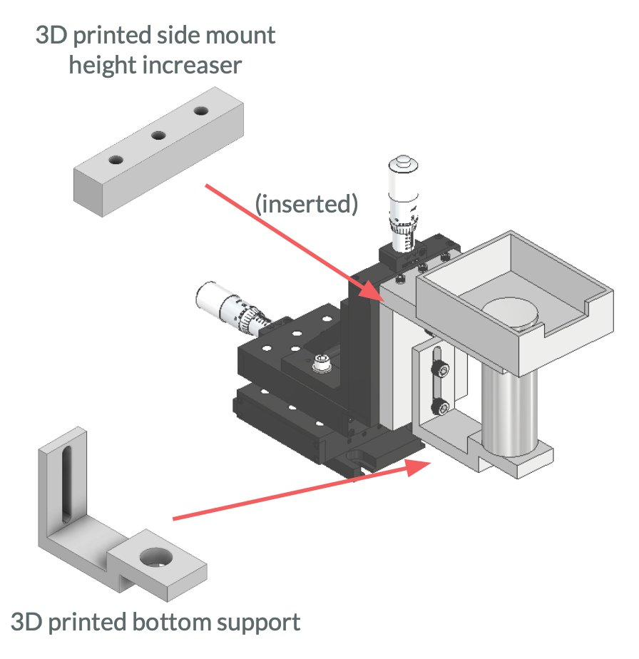
CAD of waterbath fixture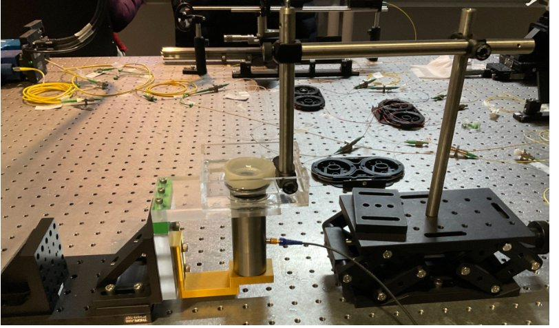
Benchtop buildAs an undergraduate researcher in the Adie Lab at Cornell, I expedited rapid testing and iteration of an Acoustic Radiation Force - Optical Coherence Tomography (ARF-OCE) system by designing a custom waterbath fixture to align ultrasound and OCT imaging systems in a tissue-mimicking setup and spearheaded the integration of finite element modeling simulations to the lab's design cycle.
Robotics Studio · Columbia
Autodesk Inventor CAD3D printingEmbedded systemsSolderingPythonROSPyBulletGenetic algorithms
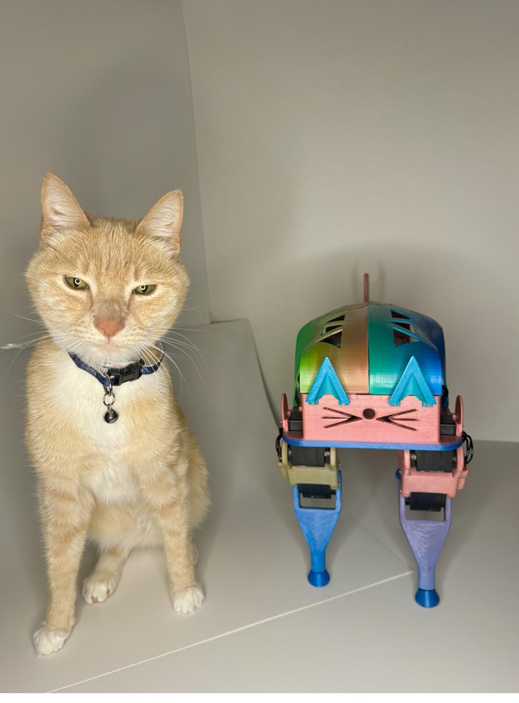
Glamour shot (feat. Teddy)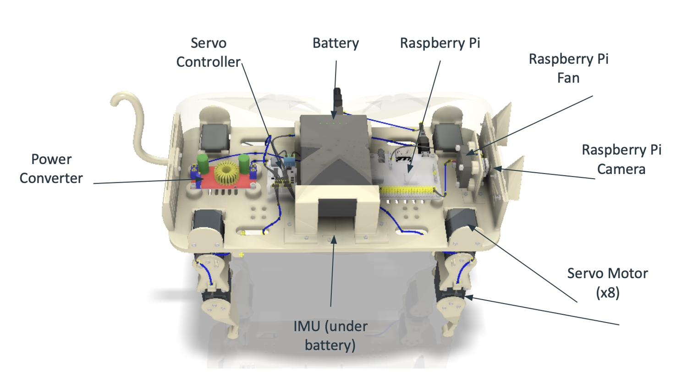
CAD schematic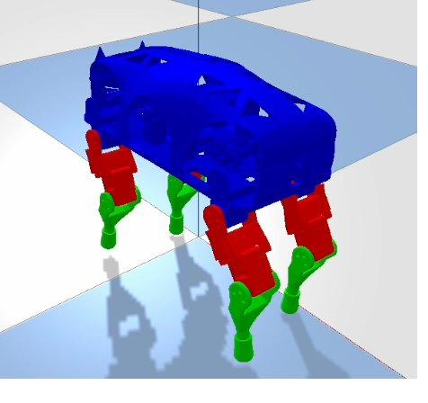
PyBullet simulation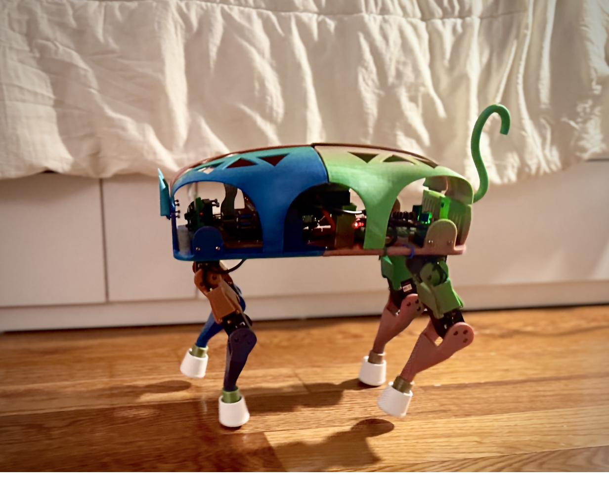
Walking action shotAs part of Robotics Studio at Columbia, we were challenged to design, build, and program a fast-walking robot using only 8 servo motors, materials available at home or in the Makerspace, and a strict $100 budget. I created Rainbow RoboCat — a quadruped robot with serial-driven legs, a rainbow-gradient 3D-printed chassis, and playful feline features.
From early concept sketches to a detailed CAD assembly, I engineered every component myself - modeling every nut, bolt, wire, and joint in Autodesk Inventor before moving to physical fabrication. I printed all chassis components on my at-home Ender 3 V3 SE using silk rainbow PLA, sanding and finishing each part to give RoboCat a polished look. I also learned how to solder for the first time, wiring the LX16A servos, battery, Raspberry Pi, and other embedded electronics into a compact and durable onboard setup.
Starting from a single leg, I gradually expanded control to all four legs using Python and the pylx16a library, developing motion primitives and a working sinusoidal gait. To further boost RoboCat's speed, I built a full PyBullet simulation of the robot using a custom URDF and applied a hill climber and genetic algorithm to optimize the gait's sinusoidal parameters.
The result: a robot capable of reaching a top speed of 38 cm/s, with movement tuned both in simulation and validated on hardware — all while staying under budget, finishing within one semester, and keeping Rainbow RoboCat full of personality.
Video not loading? Watch on YouTube ↗
Video not loading? Watch on YouTube ↗
Video not loading? Watch on YouTube ↗
Drivetrain Lead · Cornell Electric Vehicles
Jig designDFMAutodesk InventorMill / lathe / laserTolerancingTeam leadership
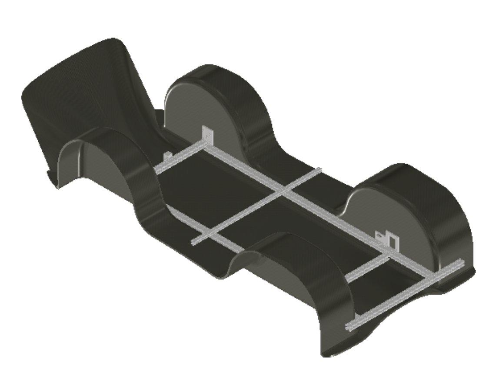
80/20 chassis jig — CAD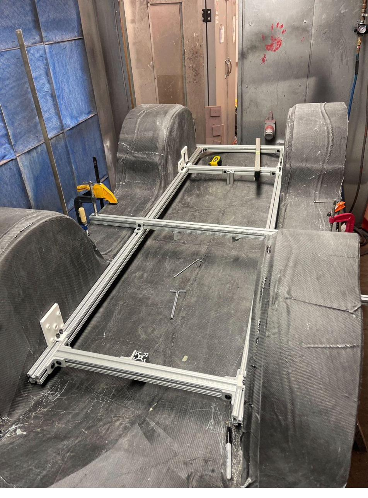
Assembled jig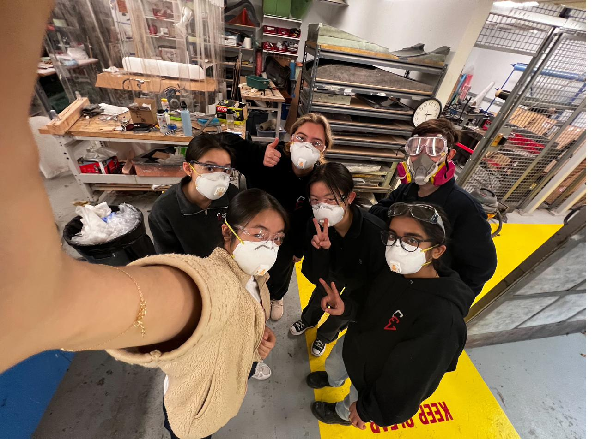
The assembly teamOver my three years on Cornell Electric Vehicles, I grew from a general mechanical subteam member into Drivetrain Subsystem Lead, a role I held for about six months. During this time, I led a dedicated assembly and jigging team of over a dozen people through the most precision-critical phase of the car's build: physically integrating the drivetrain and brake subsystems into the carbon fiber chassis.
I coordinated closely with other subsystem leads while personally designing and iterating multiple custom drilling jigs in Autodesk Inventor. These combined 3D-printed stencils, laser-cut acrylic, and 8020 framing to align drivetrain components to CAD-based constraints, all while navigating real-world tolerances and foam-core crush risks. I developed the wheel well and axle alignment jigs and directly participated in shop fabrication, using mill, drill press, and laser cutter tools comfortably to ensure fast turnarounds.
One of our initial floor jigs failed due to an oversight in the support geometry. Thanks to quick thinking from teammates I was managing, we pivoted to a laser-cut acrylic solution and salvaged the drilling schedule just in time. I learned to manage shifting priorities, communicate intent across teams, and respond constructively to mistakes under time pressure.
Later, I helped resolve unexpected interference between drivetrain and steering components by co-designing a machined brake mount fixture on short notice. These experiences sharpened my skills in DFM, cross-functional collaboration, and real-world, edge case mechanical problem-solving. The drivetrain's successful competition debut was the product of intensive planning, close communication, and a lot of hands-on shop work.
Simulation · Cornell & Columbia
Ansys Fluent CFDMeshingBiomechanicsPython numerical methodsTechnical writing
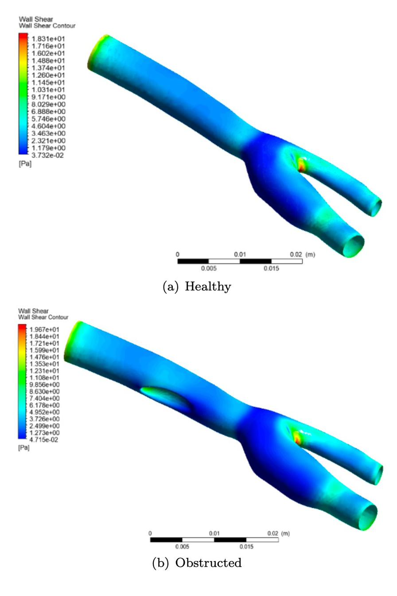
Healthy vs. obstructed wall shear stress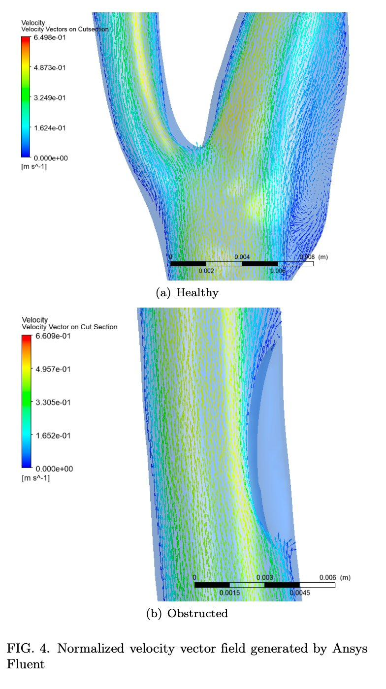
Velocity field across bifurcationThis project collection explores the cardiovascular system through fluid dynamics simulation, numerical transport modeling, and developmental biomechanics analysis.
In a computational fluid dynamics (CFD) experiment using Ansys Fluent, I simulated blood flow through a bifurcating carotid artery with and without obstruction. Using realistic CAD geometries and mesh refinement strategies, I analyzed how arterial narrowing affects flow behavior — specifically, increases in wall shear stress and flow recirculation zones that can contribute to conditions like aneurysms. The results demonstrated the role of CFD in assessing cardiovascular health risks and optimizing treatment designs.
In a separate biomechanics research project, I authored a review paper on cardiac looping morphogenesis — the earliest symmetry-breaking event in heart development. I compared two major modeling approaches: an integrated finite element model based on experimental observations (Shi et al., 2014), and a geometric instability model driven by residual stress (Bevilacqua et al., 2021). This work deepened my understanding of how mechanical forces and material properties drive tissue morphogenesis and shape organ development.
Additionally, in a third project, I explored 1D and 2D transport phenomena using Python-based numerical methods to simulate diffusion and advection in blood vessels. While an exploratory project, it helped solidify my understanding of discretization schemes and the interplay between transport mechanics and boundary conditions — foundational for modeling drug delivery and solute transport in biomedical contexts.
Founder & Team Lead · Columbia IDE
Customer discoverySolidworksPythonPrototyping & testingMarket researchTeam leadership
For people with chronic conditions, staying on top of hydration and electrolytes is a daily, high-stakes task — and staying consistent in the midst of debilitating symptoms is extremely challenging. I live with POTS myself, and ElectroBottle is my effort toward a better answer.
I lead a team of four through Columbia's Innovation, Design & Entrepreneurship program, owning problem definition, customer discovery, and prototyping strategy.
Want to talk hydration, chronic-illness design, or set up a time to chat? All my links — including my Calendly — live on my Linktree.
Human-Centered Design · Columbia
User researchInterviewingService designPrototypingUXProduct strategy
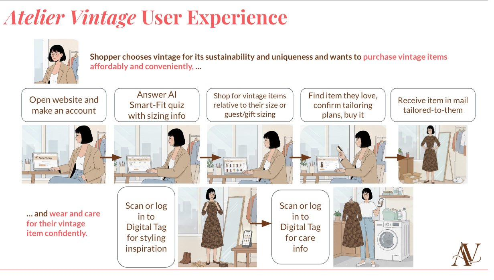
UX research synthesis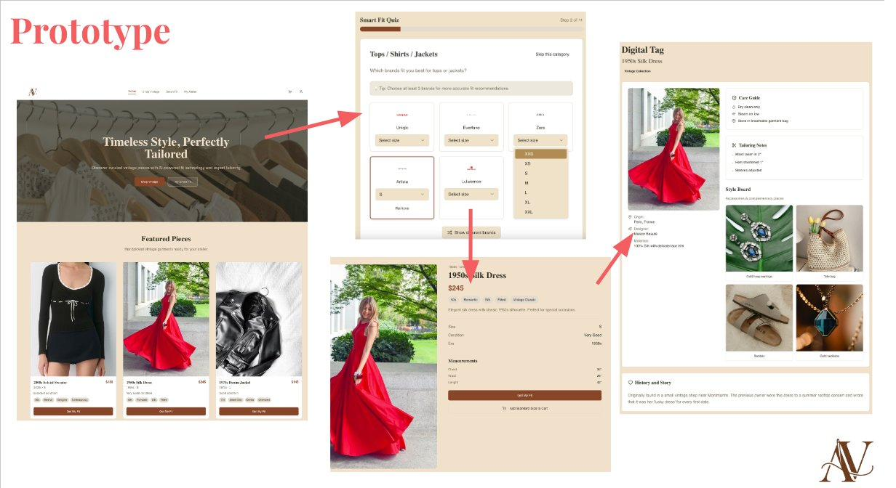
Early prototype screensVideo not loading? Watch on YouTube ↗
For Columbia's Human-Centered Design & Innovation course, my team and I designed Atelier Vintage — an online marketplace that helps vintage shoppers confidently buy, tailor, style, and care for 20–100-year-old garments without the usual uncertainty or cost barriers.
We started with the hypothesis that shoppers love vintage for sustainability and individuality, but avoid wearing it because they don't know how to size, alter, clean, or style older garments. Interviews with shoppers, stylists, and sustainability advocates confirmed that vintage pieces often feel high-risk and low-support across fit, care, and styling.
I contributed to defining the core problem, synthesizing user insights, shaping the Smart-Fit and Digital Passport concepts, comparing concept directions, and developing the prototype and final narrative across pitch and demo materials.
We explored three concepts — an app, an online marketplace, and an in-person one-stop shop. The end-to-end marketplace emerged as the strongest direction because it addressed user anxiety around fit, care, and authenticity while remaining operationally realistic.
The system reduces cognitive load, removes technical barriers around fit and garment care, and increases trust by making a garment's history and maintenance guidance visible — addressing core problems surfaced in research.
Alternative directions — like rental models, hybrid stylist-tailor apps, and immersive in-person vintage stores — were compelling but not pursued due to operational complexity or limited user pull.
Shoppers gain confidence wearing vintage pieces; platforms reduce returns tied to sizing; and tailors/stylists benefit from more predictable digital-to-physical demand.
This project strengthened my ability to translate ambiguous user hesitations into actionable design requirements, evaluate solution paths objectively, and articulate a full service ecosystem linking UX flows, business operations, and user value.
Sustainable Fashion · Personal
ThriftingCurationStylingSustainability
Thrifting and styling is one of my favorite things — finding a great secondhand piece, putting an outfit together, and feeling confident in something sustainable and well-priced. I run a small Depop shop where I curate vintage and secondhand finds and pass them on to people who'll love them.
It's also where my engineering brain and my creative side meet: sourcing, merchandising, photographing, and pricing are their own design problem, and caring about where clothes come from is the same instinct that pulls me toward human-centered, sustainable product design.
Teaching · Tutoring & TA
AP & Honors ChemistryAlgebra & GeometryElementary STEMCornell TAMentoring
Teaching is where my engineering brain meets patience and a love of explaining things clearly. I truly enjoy seeing things click after working with a student on a problem and helping students build confidence in STEM subjects, study skills, and time management.
I tutored in high school and have been tutoring again since moving to NJ in February 2026. I work with students across a wide range of levels — AP and Honors Chemistry, high school math including algebra and geometry, and younger elementary-level students building their early STEM foundations. I tailor each session to how the individual learns, mixing worked examples, intuition-first explanations, and plenty of practice.
Introduction to Controlled Fusion · Jan – May 2024
At Cornell, I served as a Teaching Assistant for Introduction to Controlled Fusion, supporting students through challenging plasma-physics material, fielding questions, and helping make a dense, advanced topic approachable. I led weekly office hours, lectures in the professor's absence, and graded problem sets and exams.
Mechanical · Hardware · Fabrication
Mechanical designFusion 360Embedded C++3D printingPythonGMP V&VRF / HFSSDOE
This corner is my mechanical and hardware side: hands-on internship work, electronics, and a home maker bench — my Bambu Lab P1S and Ender 3, a soldering iron, and more.
Brooklyn, NY · Feb 2026 – Present
Norcross, GA · Jun 2025 – Aug 2025
Syracuse, NY · Jun 2023 – Aug 2023
Get in touch
I'd love to hear from you — about a role, a collaboration, or just to connect.
Privacy
This is a personal portfolio hosted on GitHub Pages and served through Cloudflare. Cloudflare and GitHub may log visitor IP addresses and set strictly necessary security cookies to keep the site fast and protected. I don't use tracking or advertising cookies, and I don't collect personal information beyond anything you choose to send me directly by email.
Questions? am6555@columbia.edu · Last updated June 2026